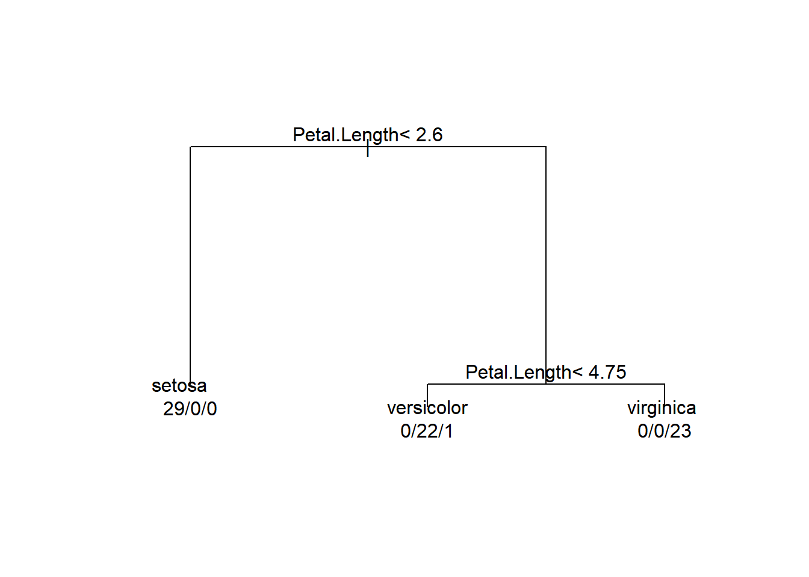

Classification and regression trees (CART)
Introduction
This week we will continue our explorations of machine learning techniques for understanding biological and ecological data sets. We are moving on to a set of techniques known broadly as decision trees. Within this class of models, we will focus our discussion on a group of predictive tools known as “classification and regression trees” or CART. CART relies on ‘recursive partitioning’ to identify patterns in the variance of response variables with respect to explanatory variables of interest. If the response is categorical, then we use classification trees. If it is numeric, then we call them regression trees. Relatively recent work has led to the development of tools that also handle multiple responses: multivariate decision trees. We will spend most of our time talking about the univariate applications.
In a way, CART can be thought of as a tool that is complementary to some of the tools that we have already talked about this semester. We can look at differences between groups and distributions like many tools we discussed, but now we are flipping the process on its head. Instead of looking for differences in a response between a priori groups that we have defined as experimental treatments or presumably different biological populations, we will be using computer algorithms to search for unknown statistical populations within the structure of our response of interest with respect to our explanatory variables. Sometimes these are populations that we assume exist ahead of time, but very often they are populations that would be hidden from detection through the use of other quantitative tools.
The basics of CART go something like this:
We partition the response into the two most homogenous groups possible based on our explanatory variables (predictors). If categorical, this means splitting into two categories. In the case of a binomial predictor, we end up with two groups- each containg only a single category. In the case of a multinomial predictor with k categories, we still end up with two groups, but each side of the partition might contain anywhere from 1 to K-1 groups. If the predictor is numeric, then we use a rank-order to determine at which rank the distributions of two groups are most homogeneous. (This is the same concept that we used when we looked at non-parametric alternatives to t-tests and ANOVA back in the first couple weeks of the semester.) This initial split is found by maximizing homogeneity between groups in the partition based on all all possible splits for each of the explanatory variables.
Once we have made the first split, we will continue to repeat the process over and over again until the tree becomes sufficiently large that we have over-fit the model. This process is called ‘growing’ the tree. We can then use some form of k-fold cross validation to ‘prune’ the tree back based on the predictive performance of the model.
For those looking for a little more (but not too much) depth and a big- picture overview of some of the math, you can find a nice worked example with some easy-to-understand diagrams in this thread from Stack Overflow.
Classification trees
We will work for the iris data for this example. The response in the iris data is a categorical variable with no particular order, Species. Because of this, the class of decision trees that we will be working with for the data is classification trees. In this case, our categorical variable has three levels (setosa, versicolor, and virginica), so we know that the initial split will include one branch that contains only one species and one branch that includes two species. The rest of our tree will be grown based on this initial structure, regardless of the variable that is used for the initial split.
First, let’s load the library and the data set that we will need to use for this example. We’ll start with the rpart package, but there are actually a few different packages that will do CART for us. Last, we set a seed for the random number generators in R so we all get the same results.
library(rpart)
# Load the iris data that we've been working with
data(iris)
# Set the random number seed so that the results
# are the same each time we run the example (if we
# didn't set this the results might differ a bit each time
# because the subsampling process below is stochastic)
set.seed(2568)Next, we will split our data into training data and test data. To do this, we will randomly select rows from our dataframe and assign them to the training data. All unsampled rows will be assigned to the test data set.
# Define a variable to subsample rows of the
# iris dataframe
n = nrow(iris)
# Define a random subsample of the original data.
# We will use these data as a training data set,
# that we will then use to fit the model. The object
# `train` is just a random sample of row numbers from
# the total number of rows ini the iris data
train = sort(sample(1:n, floor(n/2)))
# We can define separate data frames for the training
# data and the test data using the indices contained
# in `train`.
# Training data
iris.train = iris[train, ]
# Test data
iris.test = iris[-train, ]Then, we can fit the classification tree to the training data.
# Fit the tree
iris.ct = rpart(Species ~ . , # Formula: '.' means entire dataframe
data = iris, # Using iris data
subset = train # More specifically, the training data
)We can print a summary of the tree to examine where the splits occurred and how these locations were chosen by the algorithm.
# Print the summary
summary(iris.ct)## Call:
## rpart(formula = Species ~ ., data = iris, subset = train)
## n= 75
##
## CP nsplit rel error xerror xstd
## 1 0.4680851 0 1.00000000 1.191489 0.08013871
## 2 0.0100000 2 0.06382979 0.106383 0.04596270
##
## Variable importance
## Petal.Width Petal.Length Sepal.Length Sepal.Width
## 37 32 18 13
##
## Node number 1: 75 observations, complexity param=0.4680851
## predicted class=versicolor expected loss=0.6266667 P(node) =1
## class counts: 21 28 26
## probabilities: 0.280 0.373 0.347
## left son=2 (21 obs) right son=3 (54 obs)
## Primary splits:
## Petal.Length < 2.45 to the left, improve=22.69037, (0 missing)
## Petal.Width < 0.8 to the left, improve=22.69037, (0 missing)
## Sepal.Length < 5.45 to the left, improve=14.60938, (0 missing)
## Sepal.Width < 3.35 to the right, improve=13.20206, (0 missing)
## Surrogate splits:
## Petal.Width < 0.8 to the left, agree=1.000, adj=1.000, (0 split)
## Sepal.Length < 5.45 to the left, agree=0.907, adj=0.667, (0 split)
## Sepal.Width < 3.35 to the right, agree=0.907, adj=0.667, (0 split)
##
## Node number 2: 21 observations
## predicted class=setosa expected loss=0 P(node) =0.28
## class counts: 21 0 0
## probabilities: 1.000 0.000 0.000
##
## Node number 3: 54 observations, complexity param=0.4680851
## predicted class=versicolor expected loss=0.4814815 P(node) =0.72
## class counts: 0 28 26
## probabilities: 0.000 0.519 0.481
## left son=6 (31 obs) right son=7 (23 obs)
## Primary splits:
## Petal.Width < 1.65 to the left, improve=21.5436100, (0 missing)
## Petal.Length < 4.75 to the left, improve=21.3333300, (0 missing)
## Sepal.Length < 5.75 to the left, improve= 4.6163810, (0 missing)
## Sepal.Width < 2.75 to the left, improve= 0.8198787, (0 missing)
## Surrogate splits:
## Petal.Length < 4.75 to the left, agree=0.889, adj=0.739, (0 split)
## Sepal.Length < 6.35 to the left, agree=0.704, adj=0.304, (0 split)
##
## Node number 6: 31 observations
## predicted class=versicolor expected loss=0.09677419 P(node) =0.4133333
## class counts: 0 28 3
## probabilities: 0.000 0.903 0.097
##
## Node number 7: 23 observations
## predicted class=virginica expected loss=0 P(node) =0.3066667
## class counts: 0 0 23
## probabilities: 0.000 0.000 1.000Finally, we can make some very rudimentary plots in base graphics for the tree and this can greatly facilitate the interpretation of these trees. We will also add some text to the plot to make it a little easier to understand.
# Make the plot
plot(iris.ct, minbranch= 10, compress=TRUE, margin=.15, nspace=5)
# Adding text to the plot makes the tree understandable
text(iris.ct, use.n = TRUE, all = FALSE, fancy = FALSE)
While this graphical representation is easier to understand than the summary output of the tree, it is not much nicer to look at than the tabular output. So, let’s see if we can do something about that!
Tree visualization
Let’s load a new package for making some nicer trees that we might actually want to use in a talk, on a poster, or even in a paper. One trade off that we need to consider when making decisions about information and data visualization is what we gain and loose with various representations of our trees. For example, the plots above are a mess and we almost certainly wouldn’t want to use them for data presentation in a paper, a talk, or poster. However, they do contain a lot of useful information that we are likely going to lose with nicer looking tools.
We will rely on the aptly named rpart.plot package to start looking at our trees. Specifically, we are going to use the prp function for a nicer looking tree.
You’ll notice right away that we lose the neat-o group membership numbers that we got out of the ugly plots. On the other hand, this is a lot nicer to look at! Plus, it is a lot clearer to see which side the split for each variable represents.
# Library load
library(rpart.plot)
# Plot the rpart object. Here, we add an
# argument to make the variable names shorter
# so we can fit more in a single pane
prp(iris.ct, varlen = 3)
But, wouldn’t it be nice if we could get a little more information out of this nicer layout? Glad you ask!
One simple way to do it is to pass values to the extra argument in the prp function. With all of the options available in this plotting utility, it is hard to imagine one named extra, but let’s take a look at how a few of the possible values for extra change the plot (see ?prp for a detailed list of possible display options.)
# We can get counts in each category for each split
prp(iris.ct, varlen = 3, extra=1)
# Classification rate (this one is only
# for classification trees, not to be
# used for regression trees)
prp(iris.ct, varlen = 3, extra=2)
# Misclassification rates (also for classification trees only)
prp(iris.ct, varlen = 3, extra=3)
# Probability of membership in a node by class...
prp(iris.ct, varlen = 3, extra=4)Here is a really nice way of visualizing these trees, though.
Note: You may have let the package install a .dll file for gtk+ in order to get the RColorBrewer package to work. Gtk+ is the cross-platform GIMP tool kit for building graphical user interfaces (GUIs). This will not be required as part of the assignment this week because you will probably not be able to install this on the school PCs, but I want you to there is more to life (and machine learning) than ugly graphs. Now you have the code.
# Install and load the packages
library(rattle) # We'll use this one to make some more functional plots
library(RColorBrewer) # We'll use this one for colors
# Make the plot
#prp(iris.ct)
# Now, make it fancy
fancyRpartPlot(iris.ct, main='', sub='')Wicked awesome.
Pruning the tree
Now that we have looked at how to fit a tree and how to visualize a tree, we really should take a look at how to make sure the tree is not garbage. We can do this a few different ways. We have some tools available to us that we can use to determine the number of splits we should keep, what the predictive power of the resultant trees are, and we can even explore some statistical stopping rules that can eliminate the need for pruning, at least in theory.
# Let's start by fitting a tree to the data that we assume is overfit from the
# get-go
set.seed(5)
iris.ot = rpart(
Species ~ . ,
data = iris,
method = 'class',
parms = list(split = 'information'),
cp=0.000001,
minsplit = 1,
minbucket = 1)
# Take a quick look at the plot
prp(iris.ot)
fancyRpartPlot(iris.ot, main='', sub='')
Now we need to pick the tree size that minimizes misclassification rate (prediction error). To do this, we are basically going to look at changes in three things:
- Training error (error in predicting training data):
relerror - Crossvalidation error (predictive error in x-validation):
xerror - Complexity parameter:
cp
- This one tells us how much information gain we get for additional splits. In general, we are looking for the cp at which cross validation error is minimized so we can use that to decide how far back we want to prune our trees.
First, let’s look at how the cross-validation results change with respect to the size of our tree. This initial plot shows us how the relative error and the complexity parameter (cp) change with an increasing number of splits. In this plot, it is clear that by the third split we have minimized the xerror and decreases in information loss are minimized through the addition of more splits, but let’s keep moving along.
plotcp(iris.ot)
Another, perhaps more familiar, way to look at this is to plot changes in the predictive R-squared value for the tree with respect to subsequent splits. Again, it is clear that by the time we get two splits out from the root that we have essentially explained as much variance as we are going to squeeze out of this tree.
par(mfrow=c(1,2))
rsq.rpart(iris.ot)##
## Classification tree:
## rpart(formula = Species ~ ., data = iris, method = "class", parms = list(split = "information"),
## cp = 1e-06, minsplit = 1, minbucket = 1)
##
## Variables actually used in tree construction:
## [1] Petal.Length Petal.Width Sepal.Length
##
## Root node error: 100/150 = 0.66667
##
## n= 150
##
## CP nsplit rel error xerror xstd
## 1 5.0e-01 0 1.00 1.16 0.051277
## 2 4.4e-01 1 0.50 0.60 0.060000
## 3 2.0e-02 2 0.06 0.08 0.027520
## 4 1.0e-02 3 0.04 0.07 0.025833
## 5 5.0e-03 6 0.01 0.07 0.025833
## 6 1.0e-06 8 0.00 0.09 0.029086We can also print the results of the model fit to take a look at the numbers behind all of these graphs.
Some simple calculations are helpful for this:
- Prediction error rate in training data =
Root node error*rel error* 100 - Prediction error rate in cross-validation =
Root node error*xerror* 100
We want the cp value (with a simpler tree) that minimizes the xerror. The key here is that we want the first model to minimize xerror.
printcp(iris.ot)##
## Classification tree:
## rpart(formula = Species ~ ., data = iris, method = "class", parms = list(split = "information"),
## cp = 1e-06, minsplit = 1, minbucket = 1)
##
## Variables actually used in tree construction:
## [1] Petal.Length Petal.Width Sepal.Length
##
## Root node error: 100/150 = 0.66667
##
## n= 150
##
## CP nsplit rel error xerror xstd
## 1 5.0e-01 0 1.00 1.16 0.051277
## 2 4.4e-01 1 0.50 0.60 0.060000
## 3 2.0e-02 2 0.06 0.08 0.027520
## 4 1.0e-02 3 0.04 0.07 0.025833
## 5 5.0e-03 6 0.01 0.07 0.025833
## 6 1.0e-06 8 0.00 0.09 0.029086Now we can get the cp for tree that is the first to reach the minimum xerror (with the fewest number of splits):
bestcp = iris.ot$cptable[which.min(iris.ot$cptable[,"xerror"]),"CP"]
bestcp## [1] 0.01We can use the information we have to calculate the misclassification rate for our optimal tree based on the equation on line 221. Here, we can see that our best tree will have a misclassification rate of 0.035. IN OTHER WORDS, we have effectively explained 96.5% of the variance in our data with this regression tree. Aw snap!
5e-3*.07*100## [1] 0.035Now we can use that cp to prune our tree by re-fitting our model with a new cp argument, changing nothing else, to see where the splits are and how they can be interpretted.
iris.pt = rpart(Species ~ . ,
data = iris,
method = 'class',
parms = list(split = 'information'),
cp=0.01
)We see that our plot is reduced compared to the original overfitted plot, and it actually is identical to the original, although this is not always the case.
par(mfrow=c(1,1))
prp(iris.pt) fancyRpartPlot(iris.pt, main='', sub='')That should get you started fitting and pruning CART models. Although the examples that we used above are for classification trees, you should understand that these concepts work the same way for regression trees, although the interpretation varies slightly. In fact, it is more straightforward because we are just counting the number of records in each node instead of the number of records within each group in each node.
Copyright © 2017 Dan Stich. All rights reserved.